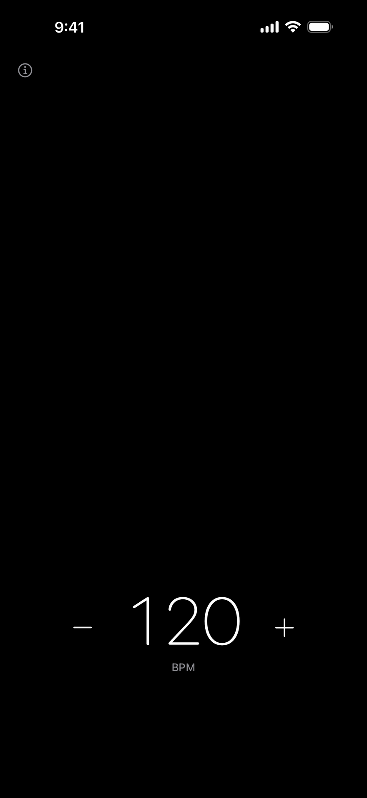
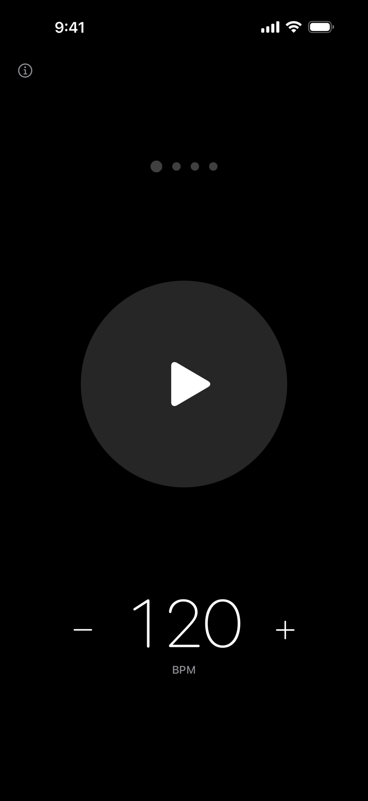
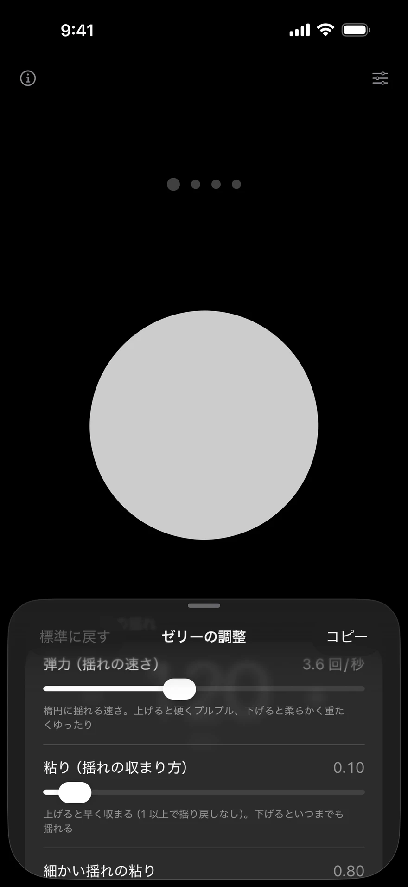

Metronomo kun pulso
septembro 2026
Superrigardo
La cirklo meze de la ekrano pulsas laŭ la ritmo kaj intenseco de ĉiu klako. Mi kreis metronomon por iPhone sen reklamoj, kontoj aŭ aparta agorda ekrano.

Mi faris ĝin por mia propra ekzercado per tenora saksofono. Oni malfermas ĝin kaj tuj povas komenci; la bato restas videbla eĉ kiam la sono estas malfacile aŭdebla. Mi faris ĉion sola, de la koncepto kaj dezajno ĝis la realigo per SwiftUI kaj la sintezo de la klakoj.
Regado — tuŝi tion, kion oni volas ŝanĝi
Sur la ekrano estas nur taktobataj punktoj, cirklo kaj la temponombro. Sen menuoj aŭ instrukcioj: oni tuŝas rekte tion, kion oni volas ŝanĝi.

- ⓘ
- Malfermas la helppaĝon.
- Taktobataj punktoj
- Tuŝeto aldonas unu baton, de unu ĝis sep batoj en takto. Glitu por aldoni aŭ forigi batojn.
- Cirklo
- Tuŝetu por komenci aŭ halti. Premtenu, poste frapetu laŭ kanto por agordi la tempon.
- Tempo
- Trenu por plirapidigi aŭ malrapidigi la tempon. Movu malrapide por pli fajna alĝustigo. Tuŝetu − aŭ + por ŝanĝi ĝin je 1 BPM.
Pulso: sekvi la ritmon kaj intensecon de ĉiu klako
La pulso de la cirklo estas tempigita por koincidi kun la klako, uzante la eligan latenttempon raportitan de iOS. Bluetooth-aŭdiloj povas enkonduki malfruon de proksimume 0,1–0,3 sekundoj. La ŝvelamplekso estas proporcia al la laŭteco de la klako: ĉe la unua bato la klako estas pli alttona kaj pli laŭta, kaj la pulso rimarkeble pli granda.
La sonfadeno planas ĉiun baton kun precizeco je la nivelo de sonprovaĵoj. La tempokalkulo evitas akumuladon de eraro, tenante la devion ene de 0,5 sonprovaĵo eĉ post horo da senĉesa reludado.
La amplekso kaj kalkulaj kondiĉoj, sur kiuj baziĝas la valoro de 0,5 sonprovaĵo, ankoraŭ bezonas konfirmon. Oni ne interpretu ĝin kiel mezuron de la momento, kiam la sono atingas la aŭskultanton, aŭ de sinkronigo kun la ekrano.
Tempo per frapetoj — silento dum la frapetado
Premtenu la cirklon kaj ĝi ektremas kiel ĵeleo. Frapetu laŭ kanto aŭ laŭ la tempo en via kapo: la cirklo enfosiĝas ĉe la tuŝita loko, ŝanceliĝas kaj resaltas. Vibrado redonas al vi la tempon.

Dum la frapetado ĝi intence silentas. Tuja sona respondo alvenus malfrue per Bluetooth kaj interkovriĝus kun la klakoj de la metronomo. Kiam oni ĉesas frapeti, klakoj je tiu tempo komenciĝas preskaŭ neaŭdeble kaj atingas sian kutiman laŭtecon dum ses sekundoj.
Sono — elekti aŭde tonalton, kiu ne perdiĝas en la saksofono
La klakoj estas sintezataj el sinusondoj, sen sondosieroj. Mi kreis komparpaĝon kaj faris tri aŭdajn komparojn per la laŭtparolilo de la iPhone dum ludado de tenora saksofono. Mi elektis 1875 Hz kaj 1250 Hz, 1.25-oble la originajn frekvencojn: super la plej forta parto de la saksofona spektro kaj sub la regiono, kiu emas soni akre.
Pli altaj kaj longaj sonoj, aŭ variantoj kun aldonitaj harmonoj, estis pli bone aŭdeblaj. Tamen mi elektis ene de la gamo, kiu konservis mildan, neŭtralan elektronikan karakteron.
Teni ĝin simpla: kion mi ellasis
Mi ellasis elekteblojn, kiuj igus homojn heziti. Por ĉiu funkcio mi kontrolis, ĉu la aplikaĵo povus funkcii sen ĝi, antaŭ ol forigi ĝin.
- Reklamoj, spurado kaj kontoj
- Decidite dekomence. La aplikaĵo ne iniciatas retan komunikadon memstare.
- Agorda ekrano
- Ĉio okazas sur unu ekrano.
- Elekto de sonkoloroj
- Du sonoj sufiĉas, por akcentitaj kaj neakcentitaj batoj. Elektebloj kreas heziton.
- Laŭteca ŝovilo
- La laŭtecaj butonoj de la aparato sufiĉas.
- Hela reĝimo
- Nur unu nigra ekrano.
- Ok aŭ pli da batoj en takto
- Nombru 12/8 en kvar batoj kaj 9/8 en tri.
- Subdividoj (okonoj, trioletoj, deksesonoj)
- Ne nepraj por la funkciado. Ili restas la unua kandidato por estonta aldono.
- Tajpado de tempo
- −/+ kaj trenado sufiĉas.
Realigita per SwiftUI sen eksteraj bibliotekoj, la aplikaĵo funkcias sur iPhone kun iOS 17 aŭ posta. Ĝia angla nomo estas No Ads Simplest Metronome. La plenaj instrukcioj kaj la privateca politiko troviĝas sur la helppaĝo (angle).